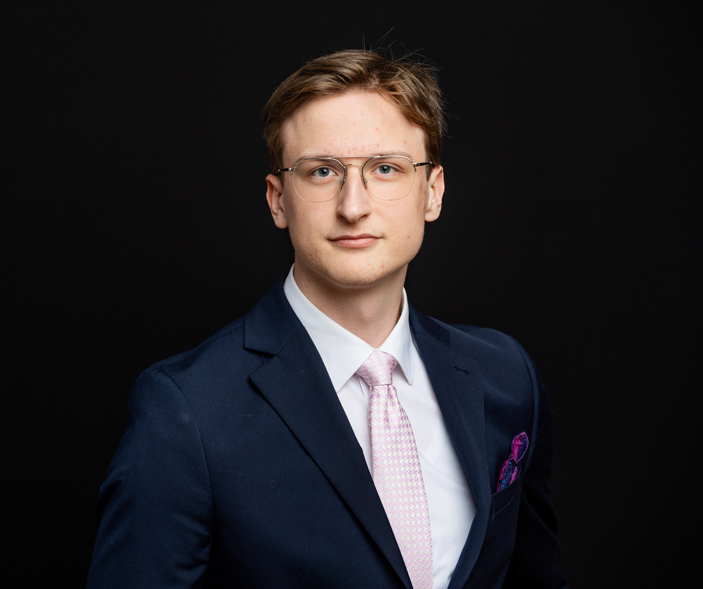

BS.
Frankfurt am Main · Germany
Finance · Corporate Banking · Capital Markets
Benjamin
Schadow.
Financial Analyst at Targobank Corporate Banking
BSc Business Administration, Frankfurt School of Finance & Management

Profile
Finance professional and Frankfurt School student with experience in corporate banking, financial analysis and asset management. Active in student leadership at Frankfurt School.